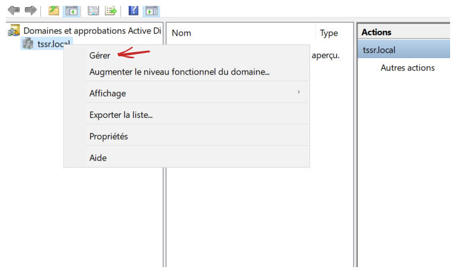
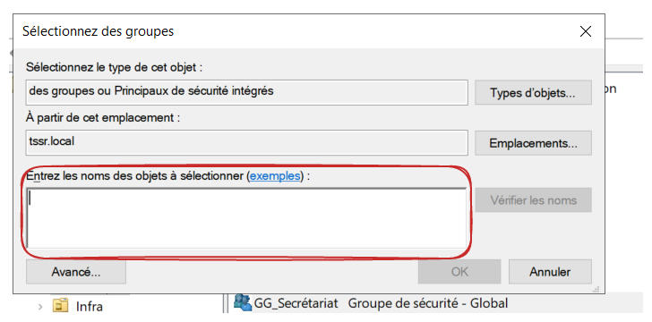
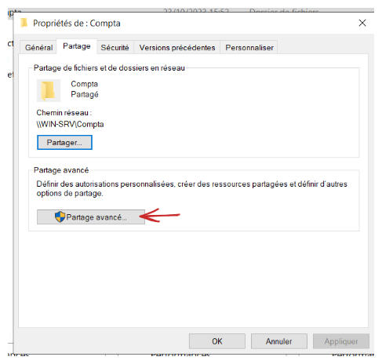

AGDLP
Ajouter un groupe
Dans le gestionnaire de domaines et d'approbations Active Directory, faire un clique droit sur le domaine et cliquer sur Gérer.

Dans la nouvelle fenêtre, faire un clique droit sur l'UO dans la quelle on souhaite ajouter le groupe, puis cliquer sur Nouveau puis sur Groupe.

Entrer le nom du groupe puis choisir l'étendue du groupe et laisser le type sur sécurité

Ajouter un utilisateur ou un groupe dans un groupe
Sélectionner les groupes et/ou les utilisateurs que l'on souhaite ajouter au groupe, puis faire un clique droit sur la sélection et cliquer sur Ajouter à un groupe…

Entrer le nom du groupe dans lequel on souhaite ajouter les groupes/utilisateurs puis cliquer sur OK.

Ajouter les droits
Dans l'explorateur de fichier, faire un clic droit sur le dossier que l'on souhaite partager, puis cliquer sur Propriétés.

Aller dans l'onglet Partage puis cliquer sur Partage avancé….

Cocher la case Partager ce dossier, puis cliquer sur Autorisations

Sélectionner Tout le monde et retirer TOUTES les autorisations puis cliquer sur Appliquer.
Sélectionner Administrateurs (Vérifier TSSR\Administrateurs) puis vérifier qu'il a TOUTES les autorisations.

Cliquer sur Ajouter… puis ajouter le groupe de sécurité de domaine local auquel on souhaite accorder les autorisations.
Cocher les autorisations souhaitées puis cliquer sur Appliquer.